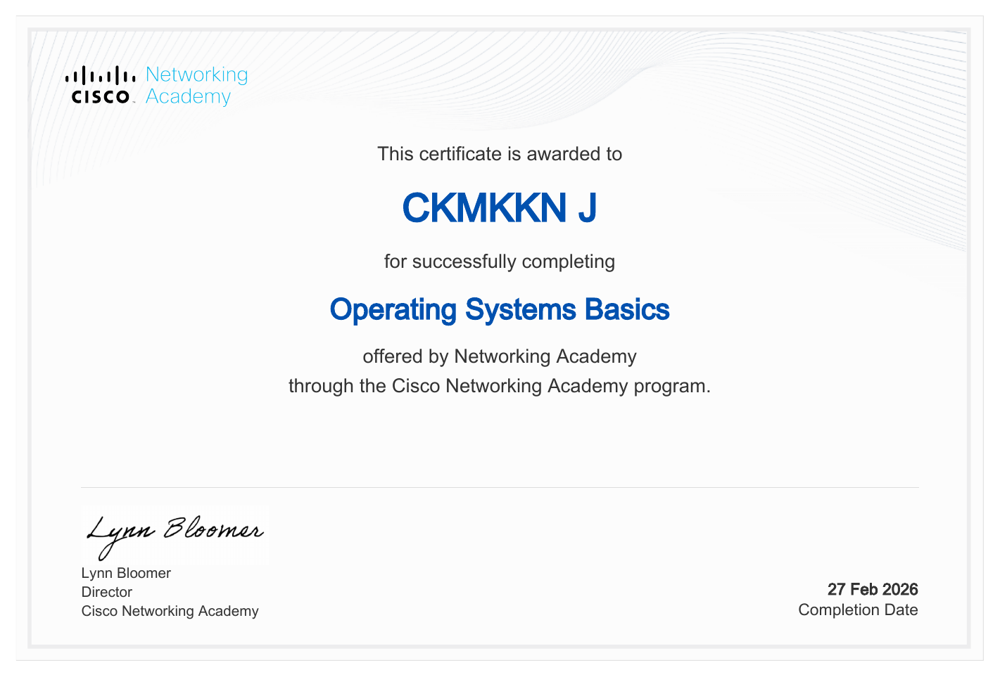

Operating Systems Basics
Certificate of Completion · Cisco Networking Academy
Proof of curiosity
Courses, certificates, and little milestones that mark the journey.

Certificate of Completion · Cisco Networking Academy
Every new thing learned
is a thing you can make.